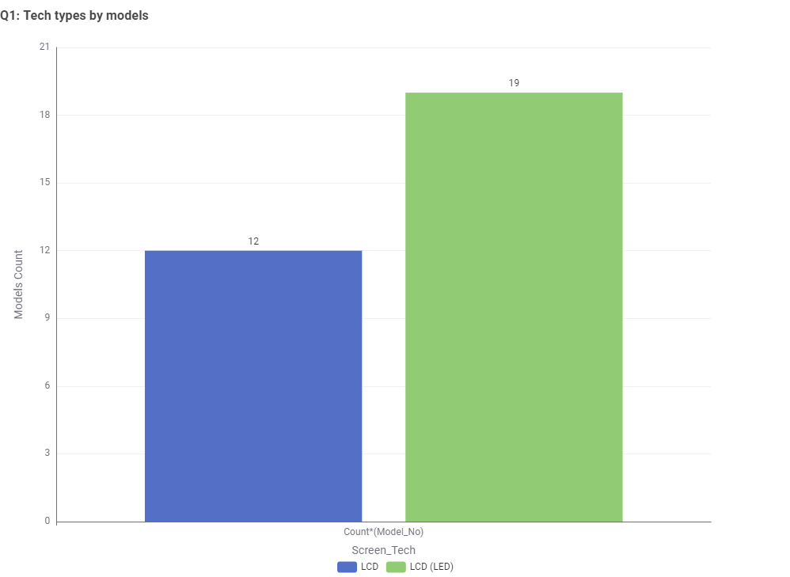

1. Screen Technology Market Share
The Australian television market shows a clear preference for LED technology, which offers an optimal balance between energy efficiency and affordability. Understanding the distribution of screen technologies helps consumers identify the most common and well-supported options in the market.

Figure 1: Frequency distribution of screen technologies in the Australian television market. LED technology represents the majority of models available, indicating its widespread adoption and consumer preference.